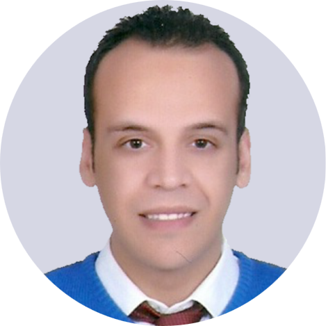

Yehia Said
Textile Engineer
2nd st Abolfotoh Hasab, Smouha, Alexandria, Egypt. 21648. +2/01000492884 .
Contact me
I am a master degree engineer with more than 2 years of experience in production and planning engineering ,
would like to utilize my skills and experience as well as my abilities.
Moreover, I would like to work with other professionals to improve my skills.
- Background in textile engineering, and materials science.
- Able to Work both as a crew member and independently.
- Responsible, efficient, and flexible.
- Hard worker, quick learner, and ability to multi-tasking.

Education:-
Wuhan textile university Wuhan, China.
Master of textile engineering and science, Excellent (94.5%), June 2020.
-
Published 3 conference papers, and authored a 29,000 words dissertation about enhancing the stabbing resistance of Kevlar woven fabrics.
Alexandria university Alexandria, Egypt.
Bachelor of textile engineering and science , Good (73.3%), June 2016
-
Authored a 14,000 words dissertation about improving the flammability resistance of Cotton woven and knitted fabrics.

Work experience:-
| CSA Textile Egypt S.A.E |
August 2016 till October 2018, Shift production engineer
- Managed my group through many tough problems getting higher efficiencies with reduction of labours turn over.
- Planning of raw materials using ERP system Program (NETSIS), production reports and groups efficiencies.
- Transaction of Iso 9001 2008 to iso 9001 2015 as planning and quality control departments head.
|
| Ressala charity organization |
2011 till 2017, Volunteering experience |

Languages:-
| Arabic |
⭐ ⭐ ⭐ ⭐ ⭐ |
| English |
⭐ ⭐ ⭐ ⭐ |
| Chinese |
⭐ ⭐ |

Hobbies:-
- A bookworm specially for Drama's novels.
- A great football player led my university's team to the 2nd place in the university’s tournament.
- Fonding of travelling around the world, and finally swimming.
© 2020 yehia said.